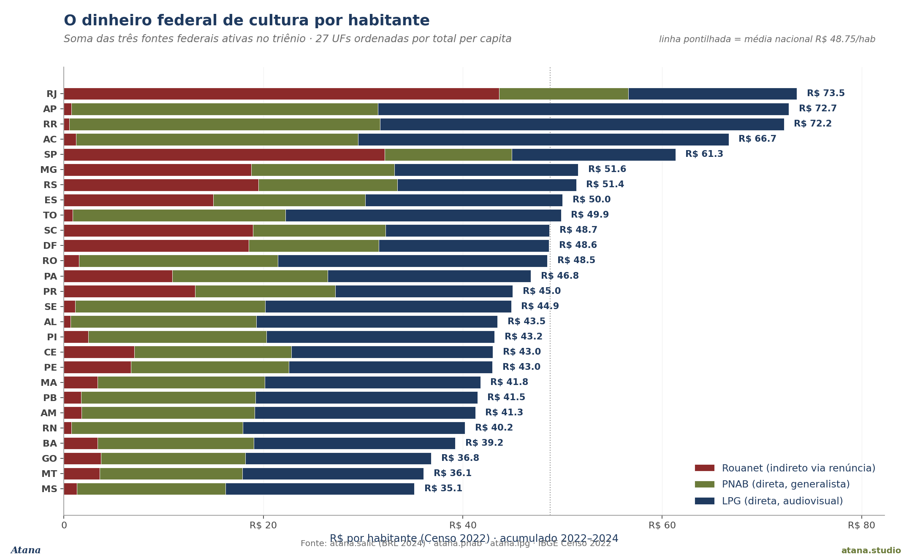

Sinal
Em 2022–2024, o governo federal brasileiro movimentou R$ 10,35 bilhões em fomento cultural por três programas distintos: Lei Rouanet (Lei 8.313/91), Política Nacional Aldir Blanc (LC 195/2022) e Lei Paulo Gustavo (LC 195/2022). Os três totais são da mesma ordem de grandeza — Rouanet R$ 3,49 bi captados, PNAB R$ 3,00 bi recebidos, LPG R$ 3,86 bi recebidos. Mas a geografia do dinheiro de cada um é uma geografia diferente.
A Rouanet enviou 40,9 % de tudo que captou para uma única UF (São Paulo) e 82,4 % para as cinco maiores. A PNAB e a LPG enviaram, cada uma, 18,9 % para a UF maior receptora e 48 % para as cinco maiores. Ou seja: no mesmo país, no mesmo triênio, dois pipes federais distribuem o dinheiro de forma quase duas vezes menos concentrada que o terceiro. Esse 22-pontos-percentuais de diferença não vem da intenção do programa nem do tema cultural privilegiado — vem da arquitetura de transferência.
A Rouanet opera pela renúncia fiscal: o governo federal abre mão do IR, e o doador privado escolhe qual projeto receberá o dinheiro. Onde estão os grandes departamentos jurídico-tributários das empresas — em SP e RJ. PNAB e LPG operam por transferência direta da União para o ente federado, com fórmula de rateio que considera população e/ou área. Onde está a população brasileira — espalhada por 26 unidades da federação + DF. As duas arquiteturas chegam ao território de jeitos completamente diferentes.
Por que importa
Há um debate de longa data na política cultural brasileira sobre a concentração regional do dinheiro de fomento. Por décadas, a única lente federal em escala foi a Rouanet — e por décadas a crítica foi a mesma: o dinheiro fica em SP e RJ. As LCs 195/2022 (PNAB) e 195/2022 (LPG) trouxeram, pela primeira vez em décadas, uma alternativa estrutural ao desenho indireto. Esta Nota empilha as três contas lado a lado, normaliza por população, e mostra empiricamente que a troca arquitetural funciona como redistribuição — não como retórica, mas como tabela.
A leitura tem três implicações imediatas:
-
Para o debate público: o dinheiro federal de cultura mudou de geografia em 2022–2024, mas a percepção pública ainda corre na inércia de três décadas de Rouanet. A imagem mental de "o dinheiro fica em SP" descreve corretamente um dos três programas e ignora os outros dois.
-
Para o ministério: a evidência empírica de que o redesenho funciona dá base para defender a continuidade dos dois programas pós-emergência. A PNAB foi desenhada como política permanente (LC 195/2022 art. 1º); a LPG era emergencial e teve seu prazo prorrogado por lei (Lei 14.628/2023). Há janela política em 2026 para decidir se o desenho permanece.
-
Para o livro: este é o achado distributivo mais limpo do corpus
atana-dataaté hoje. Pluralismo metodológico aplicado a uma única pergunta de política pública — três fontes administrativas independentes, mesma janela temporal, três respostas que só convergem quando se nomeia a arquitetura.
O que os dados dizem (1) — concentração nacional

A Tabela 1 (Figura 1) mostra a fração do total nacional de cada programa que vai para a UF mais receptora, as duas mais receptoras, e as cinco mais receptoras.
| Programa | Arquitetura | Top-1 UF | Top-2 UFs | Top-5 UFs |
|---|---|---|---|---|
| Rouanet | Indireto via renúncia (1991–) | 40,9 % | 61,0 % | 82,4 % |
| PNAB | Direto a entes, generalista (2022–) | 18,9 % | 28,7 % | 48,4 % |
| LPG | Direto a entes, AV (2022–2024) | 18,9 % | 28,7 % | 48,3 % |
Duas observações:
-
PNAB e LPG têm distribuições virtualmente idênticas. Ambos enviam 18,9 % para a UF top, 28,7 % para a top-2 e ~48 % para a top-5 — apesar de PNAB ser temático-generalista (cultura em geral) e LPG ser temático-AV (audiovisual). A fórmula de rateio é o que iguala, não o tema cultural. O desenho de transferência direta com critério populacional/territorial produz o mesmo padrão geográfico, qualquer que seja o eixo temático.
-
A diferença entre os dois desenhos não é gradual, é estrutural. A Rouanet é 2,2 vezes mais concentrada no top-1 UF, e 1,7 vezes mais concentrada no top-5 UFs. Não há solução intermediária visível no corpus — programa direto se comporta como programa direto, programa indireto se comporta como programa indireto, independentemente da bandeira temática.
O que os dados dizem (2) — quem recebe quanto por habitante

A Figura 2 normaliza pela população do Censo IBGE 2022 e mostra o R$ federal de cultura por habitante, somando os três programas. Quatro leituras dela:
-
RJ no topo (R$ 73,48/hab) — Rouanet continua sendo a principal fonte da UF, mesmo no mundo pós-PNAB+LPG, porque a renúncia fiscal historicamente preserva o porto fluminense de captação.
-
AP, RR, AC, TO logo atrás (R$ 66–73/hab) — quatro UFs com histórico Rouanet praticamente nulo (Rouanet/hab < R$ 1,50) chegando a níveis per-capita comparáveis ao RJ via PNAB+LPG. Para ressaltar: o habitante do Amapá nunca recebeu Rouanet (R$ 0,77/hab no triênio), mas recebeu R$ 72/hab nas duas transferências diretas. É um deslocamento estrutural; não é uma flutuação.
-
SP (R$ 61,32/hab) — segue alto, mas dois fatos chamam atenção: (i) é menor que o per capita do AP, embora SP capte R$ 1,4 bi de Rouanet contra R$ 0,6 mi do AP — a vantagem absoluta se dissolve quando dividida pelos 44,4 milhões de paulistas; (ii) o paulista recebe R$ 32,16 de Rouanet por habitante, mas só R$ 12,75 de PNAB e R$ 16,41 de LPG. Os dois programas direto-transfer são abaixo da média nacional em SP.
-
MS, MT, GO no fundo (R$ 35–37/hab) — UFs com Rouanet pequena e PNAB+LPG abaixo da mediana. A nova arquitetura corrige os polos, não corrige o miolo do Cerrado.
A razão R$/hab entre o maior receptor (RJ R$ 73,48) e o menor (MS R$ 35,15) é 2,1×. A mesma razão calculada só sobre a Rouanet pré-2022 (não mostrada) seria de dezenas de vezes. Cf. Figura 3 abaixo.
O que os dados dizem (3) — as UFs trocam de lugar quando o desenho muda

A Figura 3 mostra, lado a lado, a posição de cada UF no ranking de R$ per capita em cada um dos três programas. Cada linha é uma UF, ligada três vezes — uma vez por programa. O olho lê o achado sem ler tabela: as linhas vermelhas (top-5 da Rouanet) descem dramaticamente da esquerda para a direita; as linhas azul-marinho (top-5 da PNAB) sobem com a mesma intensidade no sentido oposto. As duas arquiteturas literalmente invertem quem está no topo.
Quatro leituras concretas:
-
A queda livre de SP (#2 → #27). São Paulo é a segunda UF em R$/hab pela Rouanet (atrás só do RJ), e a 27ª — a última — nos dois programas direto-transfer. O paulista médio recebe abaixo da média nacional tanto em PNAB quanto em LPG. A liderança em valores absolutos não sobrevive à normalização populacional quando o desenho do programa não a privilegia.
-
A subida igualmente forte de RR (#27 → #1/#2). Roraima sai da última posição na Rouanet e vira a primeira ou segunda em PNAB e LPG. AP, AC, TO seguem o mesmo padrão. As quatro UFs da fronteira norte e Amazônia — historicamente fora do raio Rouanet — são as que mais ganham per capita com a transferência direta.
-
A exceção RJ — o porto histórico que persiste em dois mundos. O Rio é a única UF que aparece simultaneamente no top-1 da Rouanet e mantém posição relativamente alta (ainda que não top) na PNAB/LPG, o que o leva ao topo do ranking combinado. Essa exceção tem nome: o RJ concentra historicamente a infraestrutura jurídica e cultural de captação Rouanet (produtoras AV, departamentos de relacionamento institucional), e esse capital não migra com a mudança de desenho. O RJ é a única UF brasileira em que a arquitetura indireta deposita um excedente que a arquitetura direta sozinha não substituiria.
-
O vão MS / MT / GO / BA / RN — onde nenhuma das duas arquiteturas chega bem. Cinco UFs do Cerrado, Nordeste central e Sul interior aparecem como meio de pelotão (ranks 15–22) nos três programas simultaneamente. Não são privilegiadas pela renúncia; não estão entre as mais beneficiadas pela transferência direta. A nova arquitetura corrige os polos extremos mas não fecha o vão do meio. Esse achado é um aviso de política pública: a redistribuição PNAB/LPG opera principalmente nos territórios em que a Rouanet era zero; ela não dobra o dinheiro per capita de territórios que já tinham uma fatia pequena mas não nula.
Para reforço quantitativo da troca: a razão R$/hab entre a maior e a menor UF é de 80,8 × se calculada só sobre a Rouanet, 2,4 × sobre a PNAB, 2,5 × sobre a LPG, e 2,1 × sobre a soma dos três programas. A passagem de uma razão de 80× para 2× é a versão quantitativa da mesma troca que a Figura 3 mostra em forma de cruzamento de linhas. Não é hipérbole — é a relação entre dois números reais.
Cross-validação independente. A tabela 3.15 do IBGE SIIC (Gastos tributários federais com Cultura, série Receita Federal do Brasil, 2023) coloca 77,8 % dos gastos tributários no Sudeste — confirmando, por uma fonte administrativa completamente distinta, a concentração que nossa medição via SALIC dá como 61 % em SP+RJ. Duas fontes independentes (microdados SALIC + agregados Receita Federal) descrevem a mesma geografia da renúncia.
Implicações
A nota documenta um achado distributivo limpo. Quatro implicações imediatas:
(i) Para o desenho do orçamento federal de cultura. A escolha entre arquitetura indireta (Rouanet) e direta (PNAB/LPG) é o lever distributivo mais relevante da política cultural federal hoje. O ministério tem evidência de que o redesenho funciona — não apenas em intenção, mas em onde o dinheiro pousa.
(ii) Para o debate sobre permanência dos programas. LPG foi prorrogada, PNAB foi desenhada como permanente. Há janela política em 2026 para decidir o que continua. A Nota fornece base empírica para a defesa: 3 anos de operação dos dois programas redistribuíram o dinheiro federal de cultura para territórios que nunca antes alcançou.
(iii) Para a narrativa pública. A imagem mental "o dinheiro federal de cultura fica em SP e RJ" descreve corretamente um dos três programas. Para os outros dois, é o oposto: o paulista recebe abaixo da média nacional, e o habitante do Amapá recebe acima do paulista. A percepção pública corre atrás dos dados.
(iv) Para o sistema de contas. A IBGE T3.1 (despesa federal direta com cultura, 2023) é R$ 856 mi/ano — só 4,5 % do gasto público total. Isso é uma subestimativa estrutural da influência federal, porque exclui a renúncia (Rouanet) e exclui as transferências PNAB/LPG (que aparecem na T3.1 como gasto estadual/municipal após recebidas pelo ente). A verdadeira escala da intervenção federal no fomento cultural brasileiro é R$ ≈ 3,5 bilhões/ano — quatro vezes o que a T3.1 reporta diretamente — distribuídos por três programas com três arquiteturas. Qualquer leitura honesta do sistema precisa considerar os três simultaneamente.
(v) Para o desenho de versões futuras dos programas. Duas observações específicas que a Figura 3 (rank-swap) torna visíveis e que merecem atenção do legislador:
-
A exceção RJ. O Rio de Janeiro é a única UF brasileira que aparece simultaneamente no topo das duas arquiteturas — pela Rouanet via captação histórica das majors AV e do circuito jurídico-tributário; pela PNAB/LPG via fórmula populacional. O combinado per capita do RJ (R$ 73,48/hab) é o mais alto do país. Isso significa que mesmo se a Rouanet fosse formalmente desmontada amanhã, o RJ continuaria recebendo dinheiro federal de cultura via PNAB/LPG em níveis razoáveis — mas perderia, sozinho, o porto de captação histórico de filme e AV que nenhum outro programa replica. A pergunta de política pública não é "Rouanet sim ou não", é "como preservar a infraestrutura de captação AV que se desenvolveu em RJ se a Rouanet for reformulada".
-
O vão do meio (MS / MT / GO / BA / RN). Cinco UFs aparecem como meio-de-pelotão em todos os três programas. Não recebem o privilégio histórico da renúncia, e a fórmula PNAB/LPG não as coloca entre as primeiras beneficiárias. Isso indica que a redistribuição PNAB/LPG opera principalmente sobre territórios em que a Rouanet era zero — não sobre territórios em que a Rouanet era pequena mas não nula. Um critério adicional de equidade para o desenho de versões futuras dos programas precisaria endereçar esse vão do miolo do país.
Caveats (W1–W5)
| # | Alerta |
|---|---|
| W1 | Cobertura SALIC ≈ 46 % do universo Rouanet (per caveat documentado da fonte). A cross-validação IBGE T3.11 (Rouanet 2022 captação nominal R$ 2,12 bi vs nossa medição deflacionada R$ 1,43 bi BRL-2024) é consistente com essa cobertura parcial. Tendência preservada, magnitude pode subestimar. |
| W2 | PNAB e LPG são programas de transferência; o dinheiro recebido pelo ente entra na execução estadual/municipal, e parte segue para projetos via editais subsequentes. Esta Nota mede a transferência (chegada do dinheiro ao território), não a aplicação final por projeto. |
| W3 | Janela curta (3 anos). PNAB+LPG operam desde 2022; Rouanet desde 1991. A comparação só é possível na janela de coexistência. A LPG é por desenho emergencial; sua arquitetura redistributiva pode ou não persistir além de 2024. |
| W4 | Populações Censo 2022 finais. Para a base do denominador, foi usada a divulgação oficial IBGE 2022 (ResIBGE, junho 2023). Diferenças marginais com estimativas pós-2022 não alteram o ranking. |
| W5 | Não inclui o orçamento direto da União com cultura (T3.1 IBGE, R$ 856 mi/ano em 2023). Esse orçamento é pequeno relativo às três contas federais aqui analisadas, mas existe e tem sua própria distribuição. Uma análise completa do "dinheiro federal de cultura por habitante" precisa somar essas quatro fontes. |
Fontes
| Fonte | Schema atana | Tabela / módulo | Janela |
|---|---|---|---|
| MinC SALIC API (Lei Rouanet) | atana.salic |
projetos_v2 (26.203 PRONACs) |
2022–2024 |
| MinC PNAB execução | atana.pnab |
execucao_financeira (5.425 entes) |
2022–2024 |
| MinC LPG execução | atana.lpg |
execucao_financeira (10.984 transferências) |
2022–2024 |
| IBGE Censo demográfico | (denominador, fora do atana) | tabela oficial 27 UFs | 2022 |
| IBGE SIIC capítulo 3 (cross-validação) | (fora do atana, leitura direta xlsx) | T3.11 + T3.15 + T3.1 | 2013–2023 |
Cross-walk para os 14 domínios FCS 2025 da UNESCO em canonical.domain_crosswalk (atana.pnab → Multiple transversal; atana.lpg → Audiovisual cultural; atana.salic → cultural multi-domínio).
Como citar
Roque da Silva Junior, J. (2026). Três programas, três geografias: Rouanet × PNAB × LPG, 2022–2024. Atana Note #21. atana.studio/notes/21/.
Próximas extensões previstas
- Análise 26 candidata (Vol. 1): versão estendida com Gini per capita por programa, decomposição por Grande Região, série anual 2019–2024 da Rouanet (Período Lula), e probabilidades autorais do que acontece em 2025 se a LPG não for prorrogada novamente.
- Vol. 2 do paper SALIC: seção de federalismo cultural — comparação Brasil × outros países LATAM com transferências culturais diretas (Argentina FONCA, México FONCA — escopo Phase 7 do
atana-data). - Cruzamento com TCU 1709/2025 (Acórdão PNAB): a auditoria do TCU avalia governança e execução do mesmo programa que esta Nota descreve geograficamente. Uma terceira lente — accountability vs distribuição.